A voice without borders.
An island crossover artist creating a sound shaped by where she comes from—and everything she discovers along the way.
Danielle is a Papua New Guinean artist exploring the possibilities of fusing the sounds of Papua New Guinea and the wider Pacific with musical influences from around the world.
Her music moves through reggae, soul, contemporary pop and an expanding landscape of live instrumentation and cinematic arrangements. Curiosity, emotion and creative freedom sit at the heart of her work.
Her vision continues to grow: music that feels intimate and expansive, and live experiences that connect musicians, voices, rhythms and storytelling in unexpected ways.
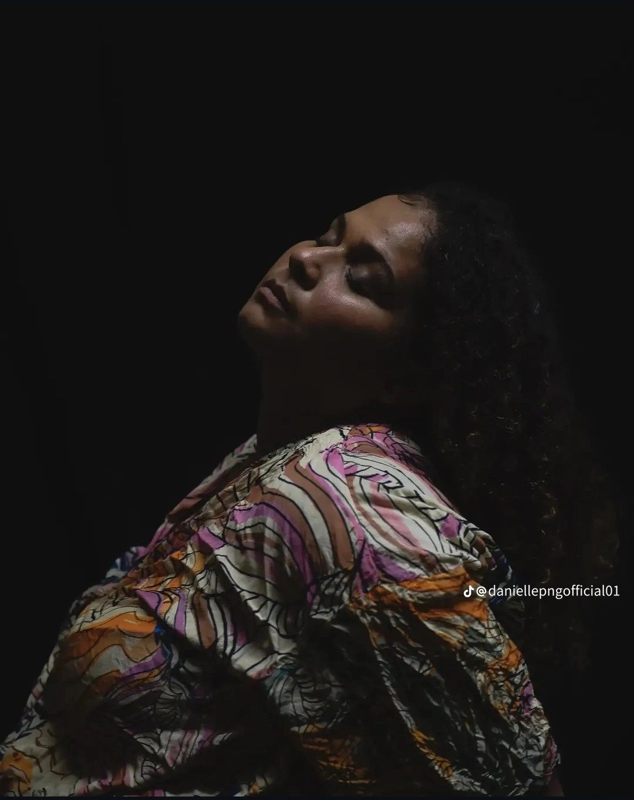
“Pacific Roots.
Inspired by the World.”
From the Pacific to the world.
New places. New sounds. New connections. One evolving voice.
Following her landmark win as the first female ABC Pacific Break winner in 2022, Danielle's journey has taken her to WOMADelaide, WOMAD New Zealand and WOMEX in Tampere, Finland.
Her musical path has brought opportunities to perform with respected artists including George Telek and David Bridie, and to encounter the work and live performances of international musicians such as Aurora and Jamaican reggae artist Protoje. Each experience continues to shape her imagination of what a live performance can be.
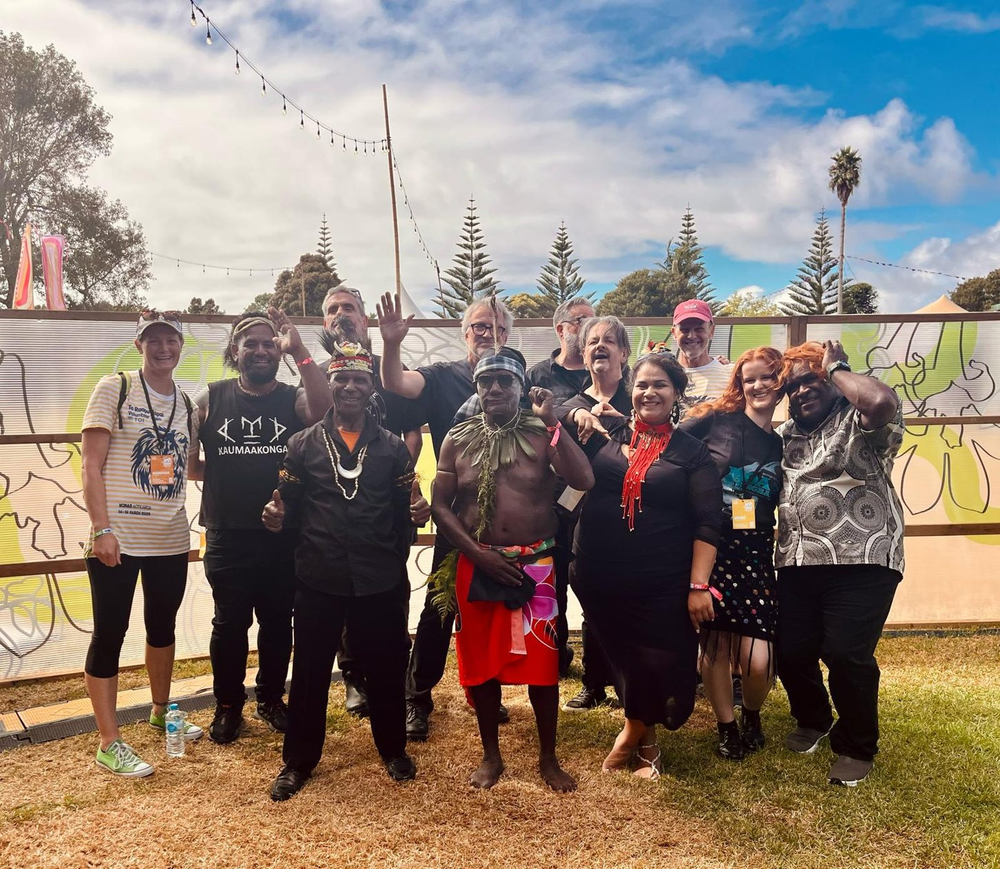
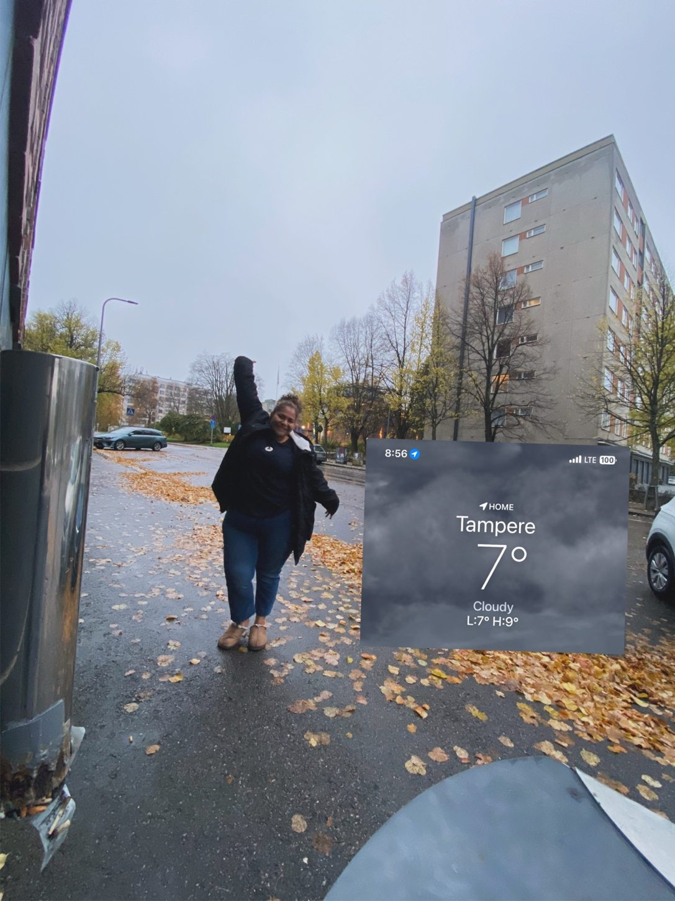
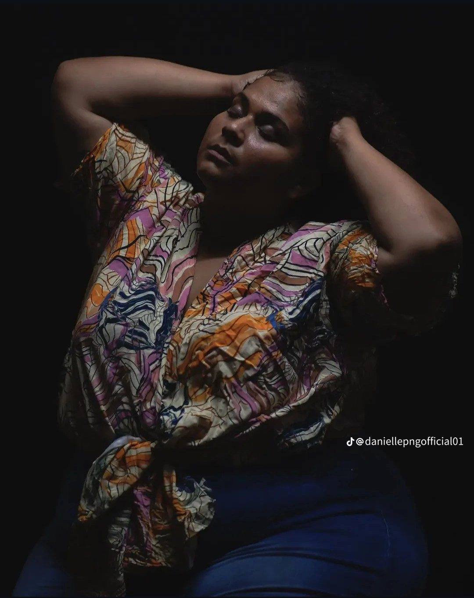
The woman behind the voice.
Some stories are spoken. Others are sung.
Before the stages and the international journeys, there was a woman learning to recognise herself again.
Emerging from a period of personal change, Danielle returned to music not with all the answers, but with a desire to rediscover her own voice. What began as something familiar became a new path towards confidence, creativity and purpose.
Beyond the spotlight, she finds meaning in family, laughter, quiet moments and the freedom to keep becoming. Not every chapter needs an explanation. Some experiences belong to the person who lived them; others find their way into a song.
Still becoming.
A story of rediscovery, unexpected doors and an ever-expanding musical horizon.
Finding her voice again
Personal change became the beginning of a new creative chapter.
ABC Pacific Break
First female winner of the competition.
Recognition & new stages
WOMADelaide and PNG FM Female Artist of the Year.
Across the world
WOMAD New Zealand and WOMEX in Finland.
The next chapter
New music, new collaborations and an ambitious vision for cinematic live performance.

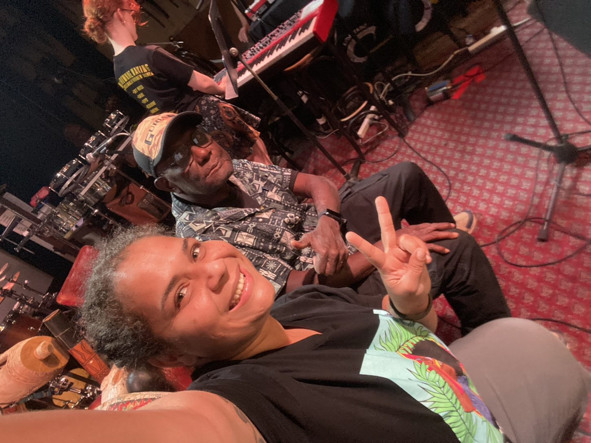
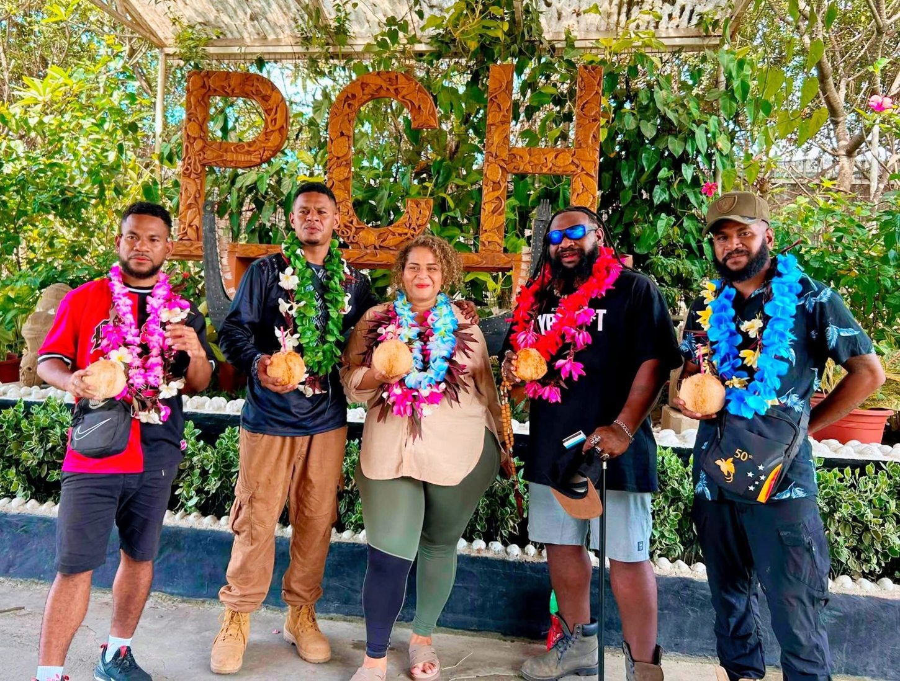
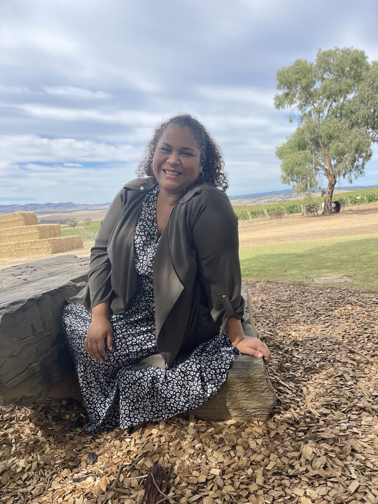
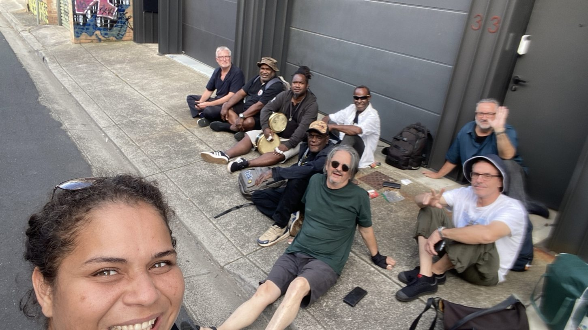
In the spotlight.
Moments from the stage, where every song becomes a story.
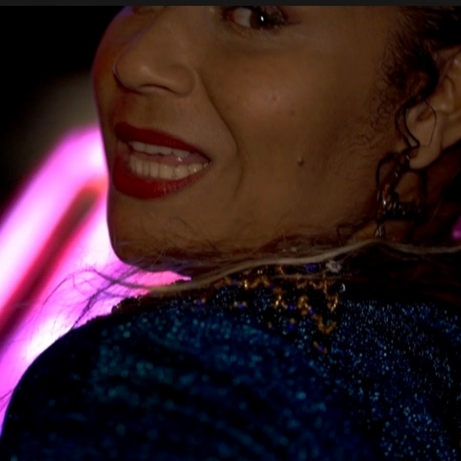
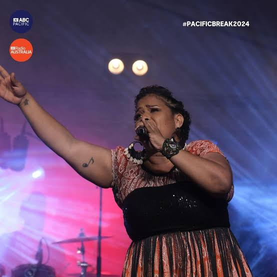
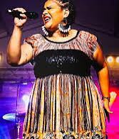
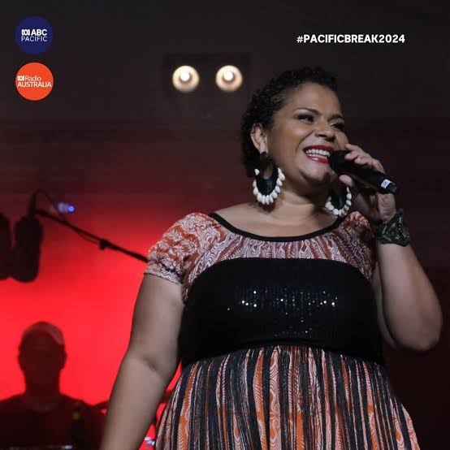
The story continues.
Discover the music, follow the journey, or get in touch about performances and creative collaborations.
Listen on SpotifyWatch on YouTubeBOOK DANIELLE